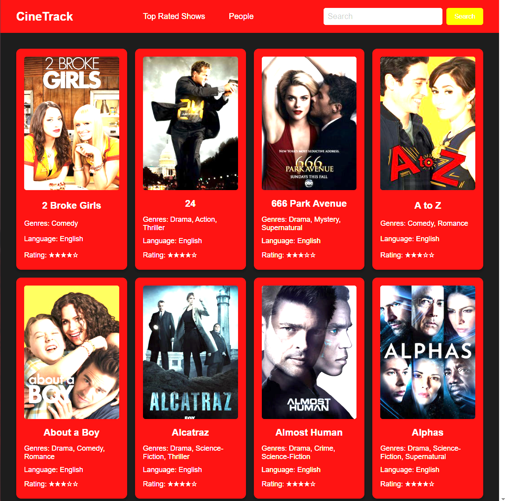
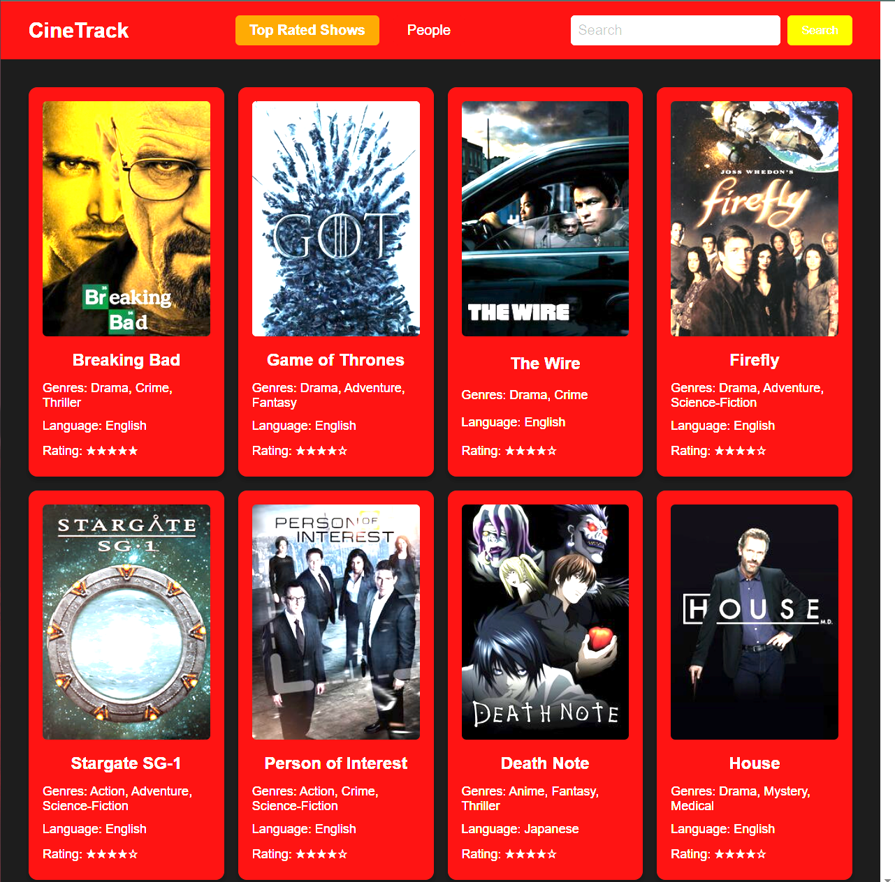
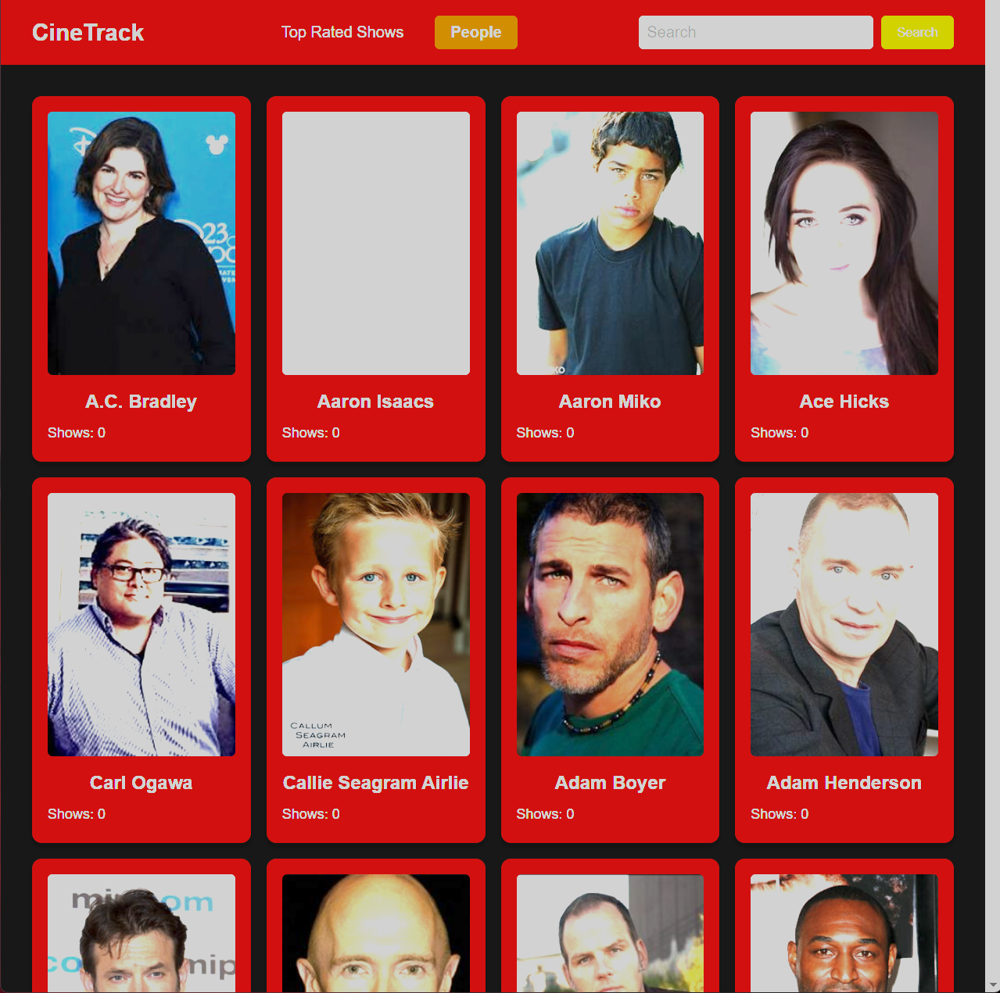
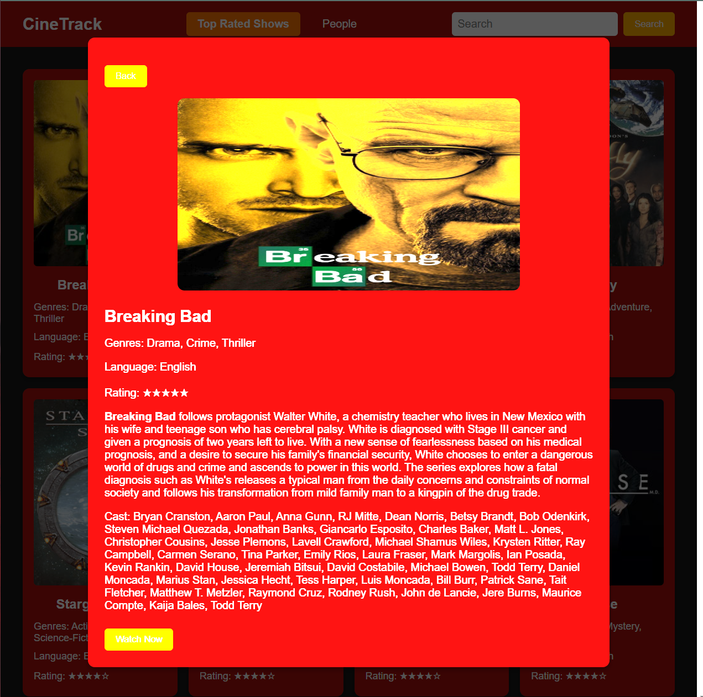

Hi! I am Deenanadh. I am a passionate and results-driven web developer with over 1 year of experience specializing in front-end development and building user-centric web applications. With a strong foundation in JavaScript, HTML, CSS, and the MERN stack, I have worked on a variety of projects, from creating responsive websites to developing dynamic, data-driven applications. My goal is to combine my technical expertise with a deep understanding of user experience to craft intuitive, accessible, and high-performance web solutions.
My Projects
CineTrack
- 
- 
- 
- 
This web application allows users to explore a vast collection of TV shows and movies, providing detailed information such as summaries, ratings, and cast information. Users can search for their favorite titles. The app pulls data from an external API to keep the information up-to-date, offering a seamless and interactive experience.
ExpenseTracker


This web application is designed to help users manage and track their financial transactions with ease. By inputting details of each transaction, users can categorize their expenses and income into predefined or custom categories, giving them a clear overview of their financial habits and budgeting.